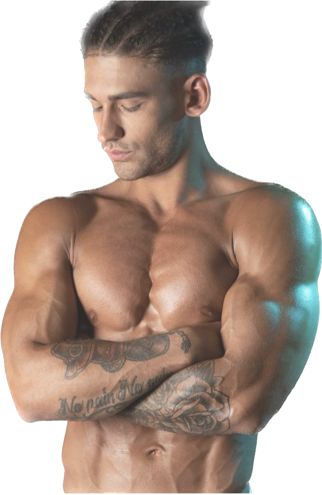

NutriMente: il tuo percorso verso un benessere fisico, mentale e nutrizionale duraturo.
Un team affiatato di professionisti sarà al tuo fianco, passo dopo passo, per aiutarti a perdere peso in modo equilibrato, senza rinunciare ai cibi che ami.
Ti guideremo nel ritrovare una nuova energia — fisica, mentale ed emotiva.
Anche se hai poco tempo, hai già provato mille strategie o pensi che sia troppo tardi per cambiare.
